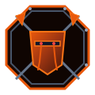
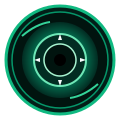

Sorrow Entities (슬픔의 존재) are metaphysical manifestations born of human grief, regret, and Han energy. Each entity is secured in dedicated containment sectors within Facility 01 (The Hand of Change) under strict SECC protocols.
SE-001: THE ORPHANED BELL
"The bell tolls for children who will never grow old." In the flooded basements of the Old Sector, an ancient bronze bell hung suspended from fractured stone arches. It wept l...
SE-002: THE GRIEVING COLOSSUS
"It walks. It weeps. Where its tears fall, buildings grow." Constructed from the crushed basalt of the Cheonbulok foundation, the Colossus wanders subterranean containment shafts c...
SE-003: THE THREAD OF MEMORY
"It weaves your memories into webs." A floating, translucent spindle that spins gossamer threads from human nostalgia. Agents assigned to its chamber report ...

SE-004: THE RUST-BLEEDING SENTRY
"He stands at attention. Waiting in the iron rain." An ancient iron automaton garrisoned at the border gate of District 14 during the First Fracture. Its internal clockwork...
SE-005: THE SMOTHERING MOTHER
"She holds you so tight you cannot breathe." A towering porcelain maternal effigy entwined with heavy black velvet swaddling bands. It manifests the overwhelming, su...

SE-006: THE SIPHON LEECH
"It drinks the dark effluent of forgotten sins." An amphibious segmented annelid organism extracted from the drainage flumes beneath Zone B. It feeds exclusively on the ...
SE-007: BRUME (THE ASHEN SCRIBE)
"Writing names on basalt slates that turn to ash." A spectral cloaked figure drifting within a swirling cloud of fine gray particulate fog. It sits perpetually before a ba...
SE-008: THE IRON MAIDEN OF REGRET
"A hollow sarcophagus lined with weeping steel thorns." An ornate Victorian-style iron sarcophagus standing upright in a pool of blackened oil. Its interior is lined with hundr...
SE-009: THE MEMORY WEAVER (DROWNED BELL)
"Submerged deep beneath the brine of drowned recollections." An aquatic bronze artifact submerged inside a massive pressure-sealed glass cylinder filled with heavy mineral brine. It...
SE-010: THE CONVERGENCE (THE ABSOLUTE VERDICT)
"When the thousand eyes converge into the singular dawn." An apocalyptic orb of woven gravitational crowns and blinding white light hovering in the center of the Subterranean Sin...
SE-011: THE WHISPERING WALLS
"The labyrinth bulkheads whisper the names of those who entered." A labyrinthine living bulkhead made of soundproofed reinforced lead tiles embedded with thousands of relief-sculpted fac...
SE-014: THE DEBT EATER (HOLLOW DEBT EATER)
"It eats your debt. But it takes your feeling with it." A colossal vested ledger beast that devours contractual documents, financial IOUs, and emotional obligations. When it sw...
SE-015: THE DEBT SCALE (SOVEREIGN DEBT SCALE)
"The cosmic fulcrum weighs remorse against lead slates." A cosmic equilibrium balance forged from iridescent sovereign glass and obsidian pendulums. It measures the moral and ps...